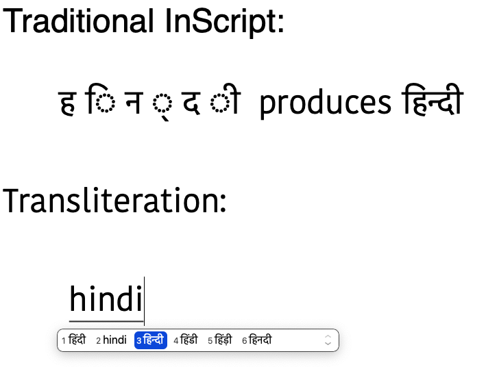

Transliteration Keyboards for Languages of India
Many users of the languages of India prefer to type with "transliteration" keyboards instead of the traditional direct "InScript" keyboards offered for many years by Apple.
As of MacOS 26 Tahoe, transliteration keyboard support is for Hindi, Marathi, Bangla, Gujarati, Punjabi, Urdu, Kannada, Malayalam, Tamil, and Telugu. These can be activated by going to System Settings > Keyboard > Text Input > Edit and using the + button to add the desired Input Source, and then selecting them in the input menu of the menu bar on the screen.
Traditional layouts for these scripts produce the main characters for each script directly from the keys, plus special characters like virama which are used to create conjunct or ligatured forms from two or more adjacent characters.
Transliteration keyboards produce Latin letters and generate a menu of possible results in the native script for any transliterated Latin input, from which the user selects the one he wants. An example for Hindi Traditional and Transliteration is given below.

Indian languages for which only the traditional kind of keyboard will be available from Apple include Assamese, Kashmiri, Nepali, Odia, Sanskrit, Sindhi, Sinhala, and a few others using Devanagari script. You might be able to find transliteration keyboards for some of these from online sources, such as Google Input Tools or Keyman or Lipika.
In macOS 26, Apple also provides a transliteration keyboard for Arabic.